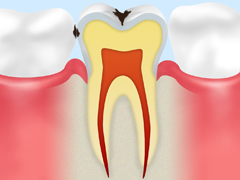
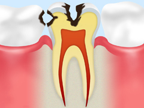
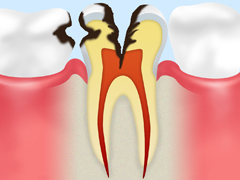
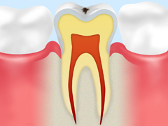
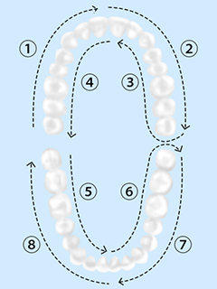
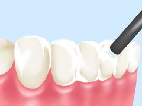
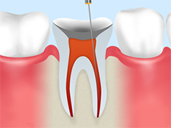
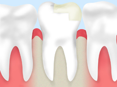

- ホーム
- 一般歯科
虫歯の治療について～一般歯科～
こちらでは福岡県春日市の歯医者「かすが歯科」が、一般歯科についてご説明します。
一般歯科とは、お口の身近な病気である虫歯の治療をおもに行う診療科です。おそらく虫歯のことを知らない人はいないでしょう。しかし残念ながら多くの人が虫歯になってしまうのは、虫歯ができるしくみを理解されていないからだといえます。
このページでは虫歯ができるメカニズムや、当院が行う虫歯治療についてご紹介します。「歯が痛い」「冷たい物がしみる」などの症状がある方は、お早めに当院までご相談ください。
痛みを感じたら、虫歯はもう進行しています
「虫歯＝痛い」というイメージをお持ちの方は多いでしょう。しかし実は、初期の虫歯に痛みはありません。もしすでに痛みを感じているなら、虫歯がかなり進行していると考えられます。
また痛みのない初期虫歯の段階で治療ができれば、処置も簡単に済みます。しかし痛みが出てからになると処置も複雑になり、治療自体に痛みを伴うことも少なくありません。削る量も増え、患者様の歯に与えるダメージも大きくなります。さらに治療期間も費用もかさんでしまいます。
そのため虫歯治療は、痛みが出ないうちにできるだけ早く受けることが大切。それを可能にするのが定期的な検診です。日ごろからホームケアで予防に取り組み、定期的に歯科医師のチェックを受けていれば、異変にもすぐに気づき早めの対処ができます。虫歯は決して自然治癒しません。できるだけ早い対応で進行を食い止めましょう。
虫歯を放置する危険性
虫歯を放置するのはとても危険なこと。放置すれば以下のようなリスクが生じます。治療を先延ばしにせず、できるだけ早く受診しましょう。
| Risk1 | Risk2 |
|---|---|
| 虫歯がどんどん進行し、悪化します。 | 激しい痛みが生じます。 |
| Risk3 | Risk4 |
| 治療が複雑になり通院回数が増えます。治療期間も長くなり費用がかさみます。 | お口の健康状態がどんどん悪化し、大切な歯を失いかねません。 |
虫歯のメカニズム
虫歯は細菌による感染症であり、メカニズムが解明されています。虫歯のしくみを理解し、予防に役立てましょう。
| Step1 | Step2 | Step3 |
|---|---|---|
|  |  |  |
| 歯の表面は、唾液によってつくられた「ぺクリル」と呼ばれる物質で薄く覆われています。このペクリルに付着した食べカスに含まれる糖分が、お口の中に棲みつく虫歯菌に分解され、ネバネバした「デキストラン」という物質が生まれます。 | ネバネバしたデキストランは水に溶けない性質があり、歯にこびりついてプラーク（歯垢）となります。さらにプラークが蓄積されると、バイオフィルム（細菌の塊）と呼ばれる膜がつくられます。 | バイオフィルムも水に溶けない性質のため、唾液が入り込めず歯の再石灰化を阻害します。加えて虫歯菌が乳酸をつくり出し、脱灰（お口の中が酸性に傾き、エナメル質からミネラル成分が失われる作用）が進むと歯が溶け出します。これが虫歯の始まりです。 |
当院の虫歯治療
かすが歯科は、患者様ご自身の歯を大切にし、できるだけ痛みの少ない虫歯治療を目指します。
虫歯の再発を防ぐ治療
虫歯は一度治療をしても再発しやすい特徴を持ちます。中でも成人の虫歯のほとんどは、過去に治療をした虫歯が再発したものだといわれています。ではなぜ虫歯は再発するのでしょうか？ その原因の一つが、「治療時の虫歯の取り残し」です。肉眼で行う治療では、どうしても小さな虫歯を取り残してしまうことがあるのです。
虫歯が再発し、治療をくり返した歯はどんどんもろくなり、最後には抜歯することに。しかし歯を失うことはできるだけ避けなくてはなりません。なぜなら歯の本数と人の寿命は、深く関わることが報告されているからです。
当院では虫歯治療をはじめとするすべての治療において拡大鏡を使用。拡大鏡は患部を2～3.5倍にまで拡大することができます。より正確な処置を実現し、患者様の虫歯再発を防ぎます。
虫歯は早期発見・早期治療が大切
虫歯は以下の4段階にわたって進行していきます。1段階目の小さな虫歯の場合、治療は歯をわずかに削って詰め物をするだけで終えられます。しかし最後の4段階目になると虫歯は歯根まで進行。こうなれば、もう抜くしかありません。ご自身の歯を大切にするためには、この段階になる前に、早期発見・早期治療に努める必要があります。
| Flow1 小さな虫歯 |
Flow2 やや大きな虫歯 |
Flow3 大きな虫歯 |
Flow4 歯根まで進んだ虫歯 |
|---|---|---|---|
|  | |||
| まだ痛みがないことが多い段階です。虫歯に冒された歯質を削り、レジンなどで埋める治療を行います。この段階なら、治療は1回で終えられます。 | 歯の内側の象牙質まで進行した虫歯で、「冷たいものがしみる」など痛みが生じます。まず虫歯に冒された歯質を削り、歯型を採って詰め物を装着。場合によっては神経を保護する治療を行います。 | 歯根にまで虫歯が進行し、常にズキズキと強い痛みがあります。虫歯が神経にまで達している場合には、神経を除去する根管治療が必要です。 | 歯冠部分がほとんど解けてしまった虫歯。神経が死んでおり痛みを感じなくなりますが、放置すれば菌が血中に入り込みさまざまなトラブルを招きます。ここまで来ると、多くの場合抜歯が必要です。 |
セラミックの詰め物・被せ物で再発防止
当院では虫歯治療に使用する詰め物・被せ物について、セラミック製のものをおすすめしています。なぜなら従来使われてきた銀歯は経年劣化によって金属が腐食し、詰め物・被せ物と歯の間にすき間をつくってしまうからです。
そのすき間から細菌が中に入り込めば、虫歯を再発させてしまいます。このような事態を防ぐため、当院では腐食のリスクが低いセラミックをおすすめしています。
口腔内カメラを使用した納得していただける治療
お口の中の治療の様子は、患者様ご自身では見ることができません。そのため「今何をされているのかわからない」と不安に思う方も多いでしょう。そこで当院では口腔内カメラを使用。虫歯の状態や被せ物の不具合、歯石が付いている部分などを撮影してモニターに映し出し、患者様ご自身にご確認いただいきます。ご自分の目で患部を確認することで、納得した治療を受けていただけます。
できるだけ再発を防ぐ根管治療
虫歯が悪化して神経まで達すると、虫歯菌に冒された神経を取り除く根管（こんかん）治療が必要です。根管は大変複雑で細く、この中から残らず汚れを取り除くには相当の技術が必要。再治療になってしまうケースも少なくありません。
当院では根管治療の再治療を防ぐため、患部を2～3.5倍に拡大できる拡大鏡を用いて丁寧に処置を行います。また、やはり大切なのは、根管治療が必要になるほど虫歯を悪化させないこと。そのため初診時の検査やその後の定期検診、予防に力を入れています。
一般歯科メニュー
ブラッシング指導

虫歯は予防できる病気です。予防の基本となるブラッシングを正しく行えるよう、患者様のお口の状態に合った効果的な磨き方を指導します。
フッ素塗布

フッ素は歯質を強化する効果があります。歯の表面にフッ素を塗布し、虫歯予防につなげます。定期的に行い効果が高めましょう。
根管治療

歯根にある根管という細い管の中から、虫歯菌に冒されて死んでしまった神経や血管を取り除き、内部をきれいに洗浄・消毒して薬剤を詰めます。重度の虫歯を抜歯から救う重要な治療方法です。
補綴（ほてつ）治療

失った歯の機能を回復させる治療です。詰め物・被せ物による治療はもちろん、入れ歯治療やインプラント治療も含まれます。